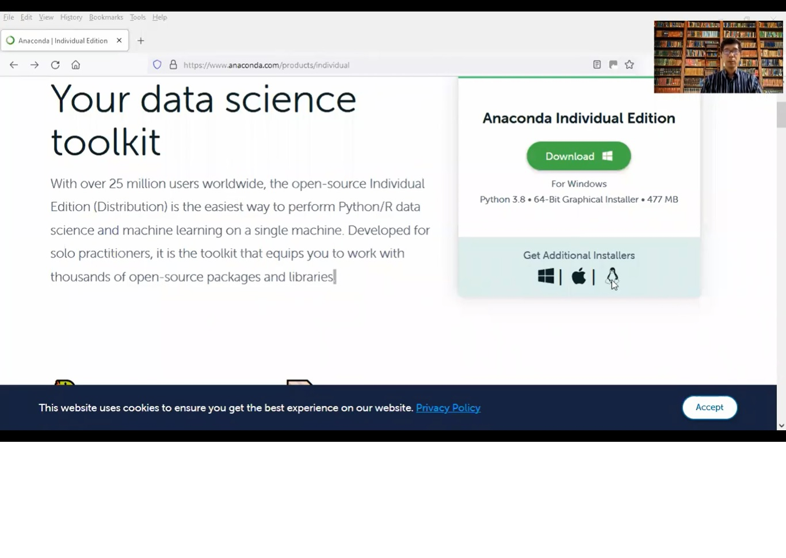

Trainer | Assessor | Course Developer | Coach | Mentor
Corporate trainer/ speaker/ coach/ mentor/ course developer for various training organizations since 2004 and Singapore Workplace Skill Qualifications (WSQ) Trainer/ Assessor for Operational, Supervisory and Managerial levels since 2009. Also conduct customized in-house corporate training for management consulting clients and appointed as the Master Trainer for an IT company for their Codeless MobileApp platform. Former Associate Lecturer with Nanyang Polytechnic and Entrepreneur Resource Centre (ERC) lecturing on financial management, financial planning and life insurance courses. Topics include:
IT courses
- Certified Information Systems Security Professional (CISSP) - 5-Day course
- Certified in Cybersecurity (CC) - 2-Day course
- Project Management Training (IT) - 3 Days course
- Introduction to Artificial Intelligence
- R Programming for Data Science
- Data Science Foundation
- Python for Data Science
- Data Science Using Python
- Machine Learning using Python
- Web Deverlopment Using JavaScript
Logistics and Supply Chain Management
- Project Management Training (Logistics) - 3 Days course
- Effective Uses and Applications of INCOTERMS in International Trade
- Fundamentals of Purchasing Skills for New Buyers and Purchasers
- Global Sourcing and International Purchasing
- How To Negotiate With Vendors and Suppliers
- Import/Export Documentation and Shipping Procedures
- Import/Export Practices and Effective Uses of Letter of Credit
- Inventory Management, Planning and Control
- Procurement and Inventory Management
- Understanding Supply Chain
- Warehouse and Storage Management (Mandarin)
- Warehouse and Storage Management
- Advanced Import/Export Documentation & Letter of Credit
Productivity
- Project Management Training (Manufacturing) - 3 Days course
- 7QC Tools & QCC
- 7QC Tools & QCC (Mandarin)
- Cycle Time Reduction for Higher Productivity
- Good Manufacturing Practices
- Kaizen Management
- Lean Manufacturing Principles and Implementation
- Line Balancing Techniques for Manufacturing
- New TPM: Total Productive Maintenance
- Productivity Improvement Techniques
- Practical Manufacturing Productivity & Cost Improvement Process
- Strategic Production Planning, Scheduling and Control
- Value Stream Mapping
- Implement Lean Six Sigma
- Overview of Lean and Supporting Manpower Priority Outcomes
- Poka Yoke (Mistake Proofing)
- Process Mapping & Analysis
- Statistical Process Control (SPC)
Customer Service
- Building A Service Focused Organisation
- Customer Focused Telephone Tactics & Etiquette
- Frontline Customer Service Skills
- Managing Difficult Customers Effectively
- Mastering Customer Relationship Management
- Service Recovery for Frontline Staff
- Winning Customer's Heart (Mandarin)
Leadership and Team Management
- Change Management in Organisations
- Developing High Performance Teams
- Effective Performance Management
- How to Handle Conflict & Confrontation
- Negotiation Skills Best Practice
- Supervisory Management Skills - Leading, Coaching, Managing
- Supervisory Management Skills - Leading, Coaching, Managing (Mandarin)
- The Art of Delegation
- The Basics of the Balanced Scorecard
Sales and Marketing
- Building an Excellent Sales Enablement Program
- Develop an Effective Marketing Plan
- Effective Pricing Strategies
- How to Build Customer Loyalty
- Managing Your Sales Team for Better Results
- New Ideas for More Sales
- Principles of Public Relations
- Psychological Marketing Strategy
- Selling Skills and Sales Strategies
- Social Media Marketing
- Successful Sales Management
Finance and Human Resource
- Conducting Training Needs Analysis
- Counselling Psychology at Workplace
- Developing Empowered and Enthusiastic Employees
- Effective Cash Flow Management
- Effective Costing Management, Budgeting and Analysis
- Effective Recruitment and Selection Techniques
- Employing, Retaining and Re-employing of Older Employees
- Financial Management for Non- Finance Personnel
- Introduction To Commercial Law
- Performance Appraisal Management
- Security and Risk Management
- Strategies for Talent Management
Personal Development
- Project Management Training - 3 Days course
- Analytical & Creative Thinking Skills
- Creative Problem Solving in Groups Using PRISM
- Effective Business Writing Skills
- Effective Office Administrative Skills
- Effective Presentation Skills
- Enhancing Communication and Interpersonal Skills
- Essentials of Email Writing and Etiquette
- Everyone Can Be an Innovation Champion
- Facilitation Skills
- Get Organised for Peak Performance
- Mind Mapping
- Technical Writing Skills
- Time Management for Personal Effectiveness
WSQ Workplace Skills
- Demonstrate Initiative and Enterprising Behaviours
- Maintain Personal Presentation and Employability
- Develop Personal Effectiveness
- Communicate and Relate Effectively at the Workplace
- Solve Problems and Make Decisions
WSQ Service Excellence
- Project a Positive and Professional Image
- Contribute to Customer Service Over Various Platforms
- Implement Operations for Service Excellence
- Demonstrate Service Vision
- Role Model the Service Vision
- Contribute to Customer Service over Various Platforms
- Engage in Service Innovation Initiatives
- Respond to Service Challenges
- Provide Go-the-Extra-Mile Service
Others:
- e-Commerce Digital Marketing
- Apply Emotional Competence to Manage Self at the Workplace
- Perform Basic Productivity Practices
- Workplace Literacy
- Workplace Numeracy
Maxwell Leadership Certified Leadership Teacher/Coach/Speaker
Maxwell Leadership Team Certified Leadership Speaker/Teacher/Coach since 2015.
- Becoming a Person of Influence
- Everyone Communicate, Few Connect
- How to Be a Real Success
- Leadership Gold
- Put Your Dreams to the Test
- 15 Invaluable Laws of Growth
- Sometimes You Win, Sometimes You Learn
Financial Planning/ Management
Certified Financial Planner (CFP)/ Chartered Financial Consultant (ChFC)/ Chartered Life Underwriter (CLI)/ Fellow Chartered Financial Practitioner (FChFP)
- Financial Planning: Process and Environment
- Fundamentals of Insurance Planning
- Income Taxation
- Planning for Retirement Needs
- Investments
- Fundamentals of Estate Planning
- Personal Financial Planning: Case Analysis
Customized Training Courses
Download list of courses here.
If you are interested in any of the courses in the list, please send an email to request for the course outline.